Daze is an unusual bot for a few reasons. First, its wheels are also its body. Second, its movement mechanisms are made of two servos with the motor shafts connected together off-center. This began as an experiment, and I would never have guessed this bot would move the way it does. At any given time, Daze might decide to roll forward, backward, or simply stay in place. It’s almost as if the bot is moving around in a daze—hence, the name.
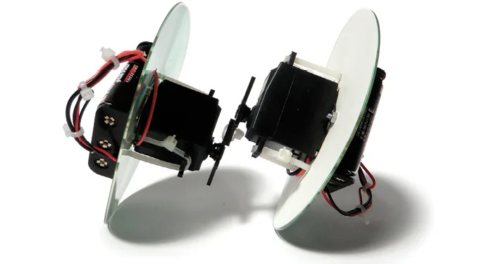
Tools and Supplies
- Two continuous-rotation servo motors with the controllers removed
- Two 3 × AA battery holders
- Six AA batteries
- Two CDs or DVDs
- Four 4-40 × 3/8-inch nuts and bolts
- Cutting template (see Appendix B)
- Zip ties of assorted sizes
- Scissors
- Roll of painter’s tape (or similar)
- Power drill
- A 1/8-inch drill bit
- Wire stripper/cutting pliers
Daze Overview
You’ll build Daze using the same modified servo motors (Chapter 4) or geared motor alternatives (Appendix A) you used for the other bots. Daze consists of two identical halves that are attached off-center to each other. You’ll start by using the drilling template to modify the CDs (or DVDs) that will act as the bot’s wheels. Next, you’ll attach the motors and the battery packs to the wheels and then attach the servo horns together (off-center). Finally, you’ll wire each motor to its own battery pack and power up Daze.
Constructing Daze
Step 1. Print out a copy of the template sheet from https://nostarch.com/homemaderobots/ (or trace it from Appendix B) and cut out both of the round drilling templates.
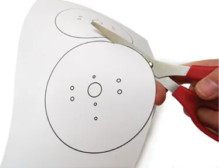
Step 2. Center and tape a drilling template to each CD.
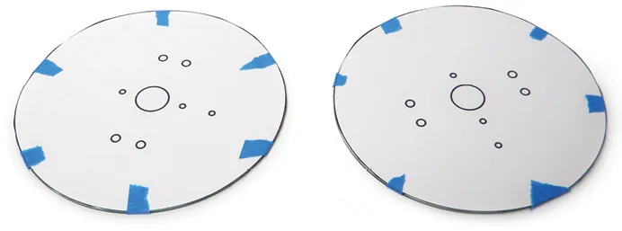
Step 3. Drill the holes indicated by the template using a 1/8-inch drill bit.
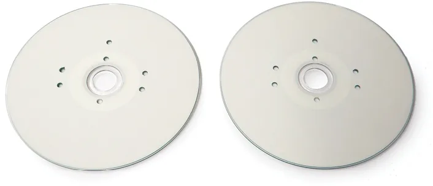
Step 4. Take the horns off the servo motors. On one of the arms of each servo horn, drill two 1/8-inch holes: one near the tip of the horn and one near the base. Drill identical holes on the other horn. Reattach the horns to the servo motors.
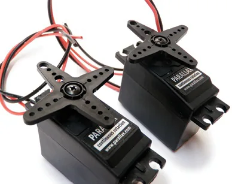
Step 5. For each CD and servo pair, lay the CD flat and place the servo on top of the center of the CD, with the horn away from the CD. Line up the CD’s four holes with the servo’s mounting holes and then zip-tie the servo to the CD. Trim away the zip tie’s tail.
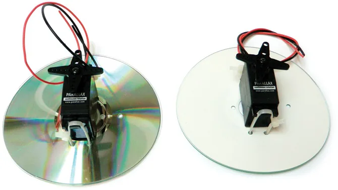
Step 6. Use nuts and bolts to attach the battery holders to the sides of the CDs opposite the servos.
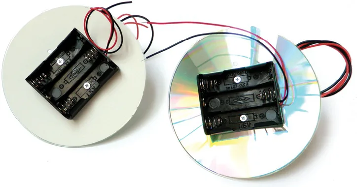
Step 7. Zip-tie the servo horns together through the four holes you drilled earlier. Pull the zip tie tight, trim away the excess, and make sure the servo horns can both spin unimpeded.
Step 8. Pass both servo motor wires through the one remaining unused hole in each CD, toward the battery holder.
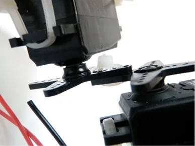
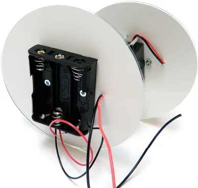
Step 9. On one of the CDs, connect the red motor wire together with the red battery wire and the black motor wire with the black battery wire. On the other CD, connect the red motor wire to the black battery wire and the black motor wire to the red battery wire, such that it’s wired opposite to the first.
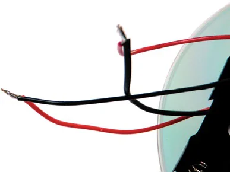
Step 10. Zip-tie everything tightly together, eliminating the slack so that the solder joints can’t possibly touch and result in a short circuit.
Step 11. To make Daze go, place it on a surface where it cannot fall, insert batteries into each battery holder, and then watch in wonder.
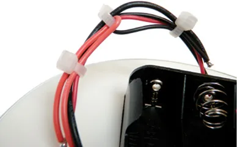
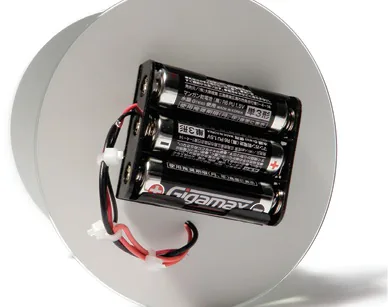